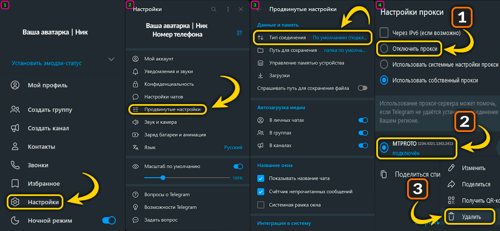

Автозапуск
«Запускать при входе» — обход включается сам при входе в Windows. «Службой» — включается при загрузке ПК, без программы. Выберите один способ.
Профили
Тест стратегий autotest
Тест по очереди запускает стратегии выбранных движков (пресеты и *.bat),
проверяет контрольные домены (обязательные + ручной список) и выбирает лучшую.
Подбор стратегии авто
Для выбранного движка перебираются вшитые пресеты и сгенерированные варианты обхода (матрица кандидатов), проверяются контрольные домены и выбирается лучший под ваше подключение. Удачную стратегию можно оставить — она появится в «Стратегиях» с чипом «автоподбор».
Обновление конфигов
не проверялось
Стратегии и списки Flowseal, а также геоблок-списки
(itdoginfo/allow-domains и runetfreedom/russia-blocked-geoip).
Telegram-прокси
выключенПозволяет Telegram работать без VPN: трафик мессенджера направляется через WebSocket-мост. Просто включите прокси и нажмите «Подключить Telegram».
После включения нажмите «Подключить Telegram» — мессенджер настроится автоматически.
Настройки прокси
Как отключить прокси в Telegram
Прокси в Telegram добавляется автоматически, но выключается в самом Telegram: Настройки → Продвинутые настройки → Тип подключения → «Отключить прокси». Старую запись в списке можно удалить там же (⋮ → Удалить).

Настройки применяются сразу
Game Filter — добавляет порты игр в обход (для онлайна в играх). Обычно не нужен:
оставьте «выкл». Включайте, если в играх проблемы с подключением при активном обходе.
ipsets — как использовать список IP (ipset-all): loaded — применять список
(рекомендуется), any — обрабатывать все IP, none — не использовать ipset.
Без необходимости не меняйте.
Права администратора
Права нужны для включения обхода и работы драйвера WinDivert. Флажок применяется сразу.
Восстановление интернета если пропала сеть
Снимает конфликты после zapret / VPN / прокси и восстанавливает сеть: останавливает службы zapret и VPN (включая AmneziaVPN), убирает зависшие драйверы WinDivert, сбрасывает прокси, кэш DNS, Winsock и TCP/IP. Пароли Wi-Fi и настройки провайдера не трогаются.
Журнал диагностика
Здесь собраны все действия программы и ошибки. Если что-то не работает — нажмите «Сохранить отчёт» и отправьте файл разработчику: в нём есть версия, система, движки и последние события.
Внешний вид тема
Тема применяется сразу и сохраняется между запусками.
Защищённый DNS IPv4 + DoH
Настраивает системный IPv4 DNS и нативный Windows DNS-over-HTTPS без UDP/TCP fallback. DoT системно не включается: для него нужен отдельный локальный резолвер.